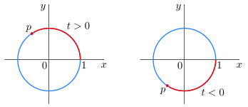
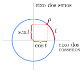
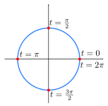
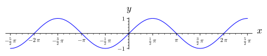
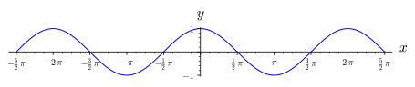
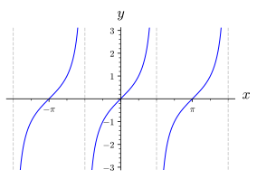
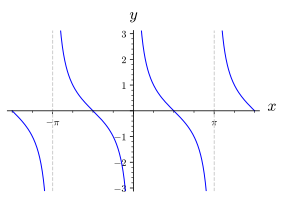
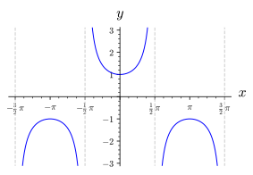
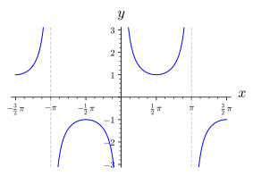

Ir ao conteúdo principal ☰ Sumário You! < Anterior ^ Acima Próximo > \(\newcommand{\identity}{\mathrm{id}}
\newcommand{\notdivide}{{\not{\mid}}}
\newcommand{\notsubset}{\not\subset}
\newcommand{\lcm}{\operatorname{lcm}}
\newcommand{\gf}{\operatorname{GF}}
\newcommand{\inn}{\operatorname{Inn}}
\newcommand{\aut}{\operatorname{Aut}}
\newcommand{\Hom}{\operatorname{Hom}}
\newcommand{\cis}{\operatorname{cis}}
\newcommand{\chr}{\operatorname{char}}
\newcommand{\Null}{\operatorname{Null}}
\newcommand{\lt}{<}
\newcommand{\gt}{>}
\newcommand{\amp}{&}
\definecolor{fillinmathshade}{gray}{0.9}
\newcommand{\fillinmath}[1]{\mathchoice{\colorbox{fillinmathshade}{$\displaystyle \phantom{\,#1\,}$}}{\colorbox{fillinmathshade}{$\textstyle \phantom{\,#1\,}$}}{\colorbox{fillinmathshade}{$\scriptstyle \phantom{\,#1\,}$}}{\colorbox{fillinmathshade}{$\scriptscriptstyle\phantom{\,#1\,}$}}}
\)
Seção 1.6 Funções Trigonométricas
Definição 1.6.1 .
O círculo unitário é o círculo de raio \(1\) centrado na origem do plano \(xy\text{.}\) Sua equação é \(x^2+y^2=1\text{.}\)
Vamos associar cada número real
\(t\) a um ponto
\(p\) do círculo unitário da seguinte forma: se
\(t\) for positivo, iniciando no ponto
\((1,0)\text{,}\) movemos sobre o círculo no sentido anti-horário uma distância
\(t\text{;}\) se
\(t\) for negativo, iniciando no ponto
\((1,0)\text{,}\) movemos sobre o círculo no sentido horário uma distância
\(|t|\text{:}\) 
Figura 1.6.2. Círculo unitário e o ponto \(p\text{.}\)
Definição 1.6.3 .
Definimos
\(\cos{t}\) e
\(sen~{t}\) como as coordenadas dos ponto
\(p\text{,}\) mais precisamente:
\(p=(\cos{t}, sen~{t}).\) 
Figura 1.6.4. Círculo unitário e as coordenadas do ponto \(p\text{.}\)
Proposição 1.6.5 .
Propriedades imediatas:
Como
\(p=(\cos{t}, sen~{t})\) está no círculo unitário, então
\begin{equation*}
\cos^2{t} + sen^2{t} =1, \quad \forall ~ t \in \mathbb{R}.
\end{equation*}
Além disso,
\begin{equation*}
-1\leq \cos{t}\leq 1 \quad \text{ e } \quad -1\leq sen~{t} \leq 1, \quad \forall~ t\in \mathbb{R}.
\end{equation*}
Lembrando que:
Figura 1.6.6. Os quatro quadrantes.
1º Quad. \(\rightarrow 0\lt t\lt \frac{\pi}{2}\)
2º Quad. \(\rightarrow \frac{\pi}{2}\lt t\lt \pi\)
3º Quad. \(\rightarrow \pi\lt t\lt \frac{3\pi}{2}\)
4º Quad. \(\rightarrow \frac{3\pi}{2}\lt t\lt 2\pi\)
Então
Tabela 1.6.7.
\(sen~{t}:\) \(0\) \(1\) \(0\) \(-1\) \(0\)
\(\cos{t}:\) \(1\) \(0\) \(-1\) \(0\) \(1\)
Quanto ao sinal dessas funções nos quadrantes: Tabela 1.6.8.
seno:
\(+\) \(+\) \(-\) \(-\)
cosseno:
\(+\) \(-\) \(-\) \(+\)
As funções seno e cosseno são periódicas com período \(2\pi\text{,}\) ou seja, \(sen~{(t+2n\pi)} = sen~{(t)}\) e \(\cos{(t+2n\pi)} = \cos{(t)}, ~ \forall~ n\in \mathbb{Z}, ~\forall t\in \mathbb{R}\text{.}\)
Definição 1.6.9 .
Funções pares e funções ímpares são funções que satisfazem relações de simetria particulares, com respeito a tomar inversas aditivas. Seja f uma função real.
Dizemos
\(f\) é par se a seguinte equação vale para todo x tal que x e −x estão no domínio de
\(f\text{:}\)
\begin{equation*}
f(x) = f(-x).
\end{equation*}
Dizemos
\(f\) é ímpar se a seguinte equação vale para todo x tal que x e −x estão no domínio de
\(f\text{:}\)
\begin{equation*}
f(x) = -f(-x).
\end{equation*}
Gráfico da função \(f(x)=sen(x)\text{.}\) 
Figura 1.6.10. Gráfico da função \(sen(x)\text{,}\) com \(\frac{-5\pi}{2}\leq x\leq \frac{5\pi}{2}\text{.}\)
Gráfico da função \(f(x)=\cos{(x)}\text{.}\) 
Figura 1.6.11. Gráfico da função \(\cos{(x)}\text{,}\) com \(\frac{-5\pi}{2}\leq x\leq \frac{5\pi}{2}\text{.}\)
Podemos observar que cosseno é uma função par, ou seja,
\begin{equation*}
\cos{(-x)} = \cos{(x)}, ~ \forall x\in \mathbb{R}.
\end{equation*}
O domínio da função cosseno é \(\mathbb{R}\text{.}\)
A imagem da função cosseno é \([-1, 1]\text{.}\)
Tabela 1.6.12.
\(sen(x):\) \(\frac{1}{2}\) \(\frac{\sqrt{2}}{2}\) \(\frac{\sqrt{3}}{2}\)
\(\cos{(x)}:\) \(\frac{\sqrt{3}}{2}\) \(\frac{\sqrt{2}}{2}\) \(\frac{1}{2}\)
Subseção 1.6.1 A função Tangente
Definição 1.6.13 .
A função tangente é definida da seguinite forma:
\begin{equation*}
\tan{x} = \frac{sen~x}{\cos{x}}, \quad x\neq \frac{\pi}{2} + n\pi ~(n\in \mathbb{Z}).
\end{equation*}
Gráfico da função \(f(x)=tan(x)\text{.}\) 
Figura 1.6.14. Gráfico da função \(\tan{(x)}\text{,}\) com \(\frac{-3\pi}{2}\leq x\leq \frac{3\pi}{2}\text{.}\)
Considerando \(f(x)=\tan{x}:\)
\(D(f) = \{x\in \mathbb{R}~|~ x\neq \frac{\pi}{2}+n\pi,~n\in \mathbb{Z}\}\text{.}\)
\(Im(f)=\mathbb{R}\text{.}\)
A função tangente é periódica de período
\(\pi\text{,}\) isto é,
\begin{equation*}
\tan{(x)}=\tan{(x+n\pi)},\quad \forall~ n\in \mathbb{Z}, \forall~ x\in D(f)\text{.}
\end{equation*}
A função tangente é ímpar, isto é,
\begin{equation*}
\tan{(-x)} = -\tan{(x)}, \quad \forall~x\in D(f).
\end{equation*}
Subseção 1.6.2 A função Cotangente
Definição 1.6.15 .
A função cotangente é definida da seguinite forma:
\begin{equation*}
\cot{x} = \frac{\cos{x}}{sen~{x}}, \quad x\neq n\pi ~(n\in \mathbb{Z}).
\end{equation*}
Gráfico da função \(f(x)=\cot(x)\text{.}\) 
Figura 1.6.16. Gráfico da função \(\cot{(x)}\text{,}\) com \(\frac{-3\pi}{2}\leq x\leq \frac{3\pi}{2}\text{.}\)
Considerando \(f(x)=\cot{x}:\)
Subseção 1.6.3 A função Secante
Definição 1.6.17 .
A função secante é definida da seguinite forma:
\begin{equation*}
\sec{x} = \frac{1}{\cos{x}}, \quad x\neq \frac{\pi}{2} + n\pi ~(n\in \mathbb{Z}).
\end{equation*}
Gráfico da função \(f(x)=\sec(x)\text{.}\) 
Figura 1.6.18. Gráfico da função \(\sec{(x)}\text{,}\) com \(\frac{-3\pi}{2}\leq x\leq \frac{3\pi}{2}\text{.}\)
Considerando \(f(x)=\sec{x}:\)
\(D(f) = \{x\in \mathbb{R}~|~ x\neq \frac{\pi}{2}+ n\pi,~n\in \mathbb{Z}\}\text{.}\)
\(Im(f)=(-\infty, -1]\cup[1,+\infty)\text{.}\)
A função secante é periódica de período
\(2\pi\text{,}\) isto é,
\begin{equation*}
\sec{(x)}=\sec{(x+2n\pi)},\quad \forall~ n\in \mathbb{Z}, \forall~ x\in D(f)\text{.}
\end{equation*}
A função secante é par, isto é,
\begin{equation*}
\sec{(-x)} = \sec{(x)}, \quad \forall~x\in D(f).
\end{equation*}
Subseção 1.6.4 A função Cossecante
Definição 1.6.19 .
A função cossecante é definida da seguinite forma:
\begin{equation*}
\csc{x} = \frac{1}{sen~x}, \quad x\neq n\pi ~(n\in \mathbb{Z}).
\end{equation*}
Gráfico da função \(f(x)=\csc(x)\text{.}\) 
Figura 1.6.20. Gráfico da função \(\csc{(x)}\text{,}\) com \(\frac{-3\pi}{2}\leq x\leq \frac{3\pi}{2}\text{.}\)
Considerando \(f(x)=\csc{x}:\)
\(D(f) = \{x\in \mathbb{R}~|~ x\neq n\pi,~n\in \mathbb{Z}\}\text{.}\)
\(Im(f)=(-\infty, -1]\cup[1,+\infty)\text{.}\)
A função cossecante é periódica de período
\(2\pi\text{,}\) isto é,
\begin{equation*}
\csc{(x)}=\csc{(x+2n\pi)},\quad \forall~ n\in \mathbb{Z}, \forall~ x\in D(f)\text{.}
\end{equation*}
A função secante é ímpar, isto é,
\begin{equation*}
\csc{(-x)} = -\csc{(x)}, \quad \forall~x\in D(f).
\end{equation*}
Exercícios Exercícios
1.
Determine o valor exato de cada expressão.
\(\displaystyle \sin\dfrac{2\pi}{3}\)
\(\displaystyle \cos\dfrac{2\pi}{3}\)
\(\displaystyle \tan\dfrac{2\pi}{3}\)
\(\displaystyle \sin\dfrac{7\pi}{6}\)
\(\displaystyle \cos\dfrac{7\pi}{6}\)
\(\displaystyle \sec\dfrac{7\pi}{6}\)
\(\displaystyle \mbox{cossec}\dfrac{7\pi}{6}\)
\(\displaystyle \mbox{cotg}\dfrac{7\pi}{6}\)
\(\displaystyle \tan \dfrac{11\pi}{6}\)
\(\displaystyle \sec \dfrac{11\pi}{6}\)
2.
Se \(\cos\theta=-\dfrac{4}{5}\) e \(\pi\leq \theta\leq \dfrac{3\pi}{2},\) determine:
\(\displaystyle \sin\theta\)
\(\displaystyle \sec\theta\)
\(\displaystyle \mbox{tg}\hspace{0.05cm}\theta\)
\(\displaystyle \mbox{cossec}\hspace{0.05cm}\theta\)
\(\displaystyle \mbox{cotg}\hspace{0.05cm}\theta\)
3.
Resolva as equações:
\(sen(x)cos(x)=0\text{,}\) para
\(0\leq x\lt 2\pi\text{.}\) Resposta .
\(S = \left\{ 0, \frac{\pi}{2}, \pi, \frac{3\pi}{2} \right\}\)
\((2sen^2(x)-1)(4cos(x)-2)=0\text{,}\) para
\(0\leq x\leq 2\pi\text{.}\) Resposta .
\(S = \left\{ \frac{\pi}{4}, \frac{3\pi}{4}, \frac{5\pi}{4}, \frac{7\pi}{4}, \frac{\pi}{3}, \frac{5\pi}{3} \right\}\)
\(cos(x)sen(x)-cos(x)+sen(x)-1=0\text{,}\) para
\(0\leq x\lt 2\pi\text{.}\) Resposta . \(S = \left\{ \frac{\pi}{2}, \pi \right\}\)
\((8sen^3(x)-1)(2cos(x)+\sqrt{3})=0\text{,}\) para
\(0\leq x\lt 2\pi\text{.}\) Resposta . \(S = \left\{ \frac{\pi}{6}, \frac{5\pi}{6}, \frac{7\pi}{6} \right\}\)